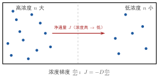

气体的扩散现象
一句话定义
气体的扩散现象是气体在数密度不均匀时，分子由浓度高处向浓度低处净迁移、使浓度趋于均匀的质量输运过程，由分子无规运动与碰撞引起。
定性
先把这个”悄然蔓延”看个清楚。
你在房间一角打翻一滴香水，过几分钟，满屋子都能隐约闻到——但香水并没有”一阵风”吹过来，它是一点一点自己”渗”过来的。这就是扩散。微观上，香水分子的确在飞快乱跳，而且在各个方向机会均等；但起点处香水分子多、远处少，于是”从香水堆里往外跳”的次数、天然多于”从远处往香水堆跳”的次数——净效果就是香水分子从浓处往稀处迁移，浓度逐渐被拉平。
所以要抓住一点：扩散看起来像”分子朝一个方向跑”，其实没有任何一个分子在定向跑，每个分子依旧各向随机。真正的”方向感”完全来自浓度差——多的那一边，往少的那边”溢出”的概率更大。它是”随机游走叠加在浓度不均匀上”的统计结果。
它在体系里的位置：扩散、黏性、热传导是气体动理论的三大输运现象。三者机制相同（分子乱跑+碰撞，把某个物理量从”多”搬到”少”），只是搬运的对象不同——扩散搬的是”质量（分子数）“，黏性搬的是”动量”，热传导搬的是”能量”。理解了扩散这台”随机游走搬运机”，另两样也就通了。
反直觉的点：分子速度几百米每秒，扩散却极慢。因为分子每撞一次就转向，走的是折线，净位移随时间只按 增长（而非线性）。所以扩散是”又快又慢”——单个分子飞快，宏观上站稳落定却要慢慢等。
顺着这个反直觉再记一个判据：扩散与”宏观流动”的本质区别在于有没有定向的整体速度。如果你搅动气体（开口、风机、浮力对流），整体气体带着分子一起走，那是对流输运，速度往往比扩散快几个数量级；只有气体”整体静止、仅靠分子四处乱撞混合”时，才是纯扩散。很多工程嫌扩散太慢，正是靠引入对流来”搭便车”，这一点是理解传质问题的总开关。

图：浓度沿 方向分布不均匀，存在浓度梯度 ；分子从高浓度向低浓度随机迁移形成净通量 ，满足菲克定律 。
数学表达
扩散的宏观规律是菲克第一定律（稳态，质量通量与浓度梯度成正比、方向相反）：
是扩散通量（单位时间通过单位面积的分子数/质量，）， 是扩散系数（）， 是数密度， 是数密度沿 的梯度，负号表示从高浓度流向低浓度。
若浓度随时间变，用菲克第二定律：
由初级气体输运理论，扩散系数与微观量的关系：
是平均自由程， 是分子平均速率。再由 、：
读这个结构： 是”通量 ∝ 负梯度”——梯度是”有多不均”（驱动）， 是”扩散有多快”（输运能力）。 点出微观本质：自由程 越长、分子越快，扩散越快。
关键性质
-
从高浓度流向低浓度。 净通量方向与浓度梯度相反（负号）。为什么：高浓度侧分子多，“往外跳”的概率大于”往里跳”，净迁移由密往疏；浓度相等（零梯度）时净通量为零、系统达稳态。
-
宏观净迁移，微观依然随机。 单个分子没有固定方向，扩散方向完全是宏观统计结果。为什么：每个分子的随机游走是各向同性的，但叠加在浓度不均匀上后，“从密往疏”的随机流出量多于反方向，于是宏观呈现定向的净输运。
-
正比于 。 扩散快慢由”能飞多远”和”飞多快”决定。为什么：分子每飞一个 就带一次浓度”信息”； 大则信息传得远， 大则传得快，故 。
-
。 升温、降压都加速扩散。为什么：、，相乘得 。升温使分子更快、自由程更大，扩散增强；降压因 减小使 变大、扩散增强。
-
随时间扩散按 扩展。 浓度峰的”弥散宽度”约 。为什么：这是菲克第二定律的解——扩散是随机游走，均方位移 ，故特征距离 ，而非线性。这正是”看似快实则慢”的数理根源。
推导
现在把菲克定律与 真正推出来——不是背 ，而是从”分子左右互换”看起。
先抛问题：宏观上”从浓到稀”的扩散通量，怎么从微观的随机分子运动导出？扩散系数 为什么和 、 挂钩？
设物理场景。取气体在 方向存在数密度梯度 （ 增大、 减小）。考虑 处一个单位截面、穿过 的”净分子流”。分子平均自由程 、平均速率 。
列依据。三条：一是分子无规运动，但浓度不均匀；二是分子每飞约一个 才撞转向，可近似认为”来自 的分子带着那边的浓度、来自 的分子带着那边的浓度”；三是统计平均。
逐步演绎。第一步，看左右两部分对 处的贡献。大致来说，从左边（ 处）飞过来的分子，带的是那个较浓位置的浓度；从右边（）飞来的，带的是较稀位置的浓度。由于分子各向随机，向正 和负 穿过截面的次数大体相等，各约 （六个方向之一）。
第二步，算净通量。向右的净分子数 = 向右的数密流 − 向左的数密流。因为左侧更浓、右侧更稀：
第三步，用导数的差分近似。，代入：
第四步，对照菲克定律 ，读出扩散系数：
回头看。结论水到渠成：扩散的”净通量”不是哪个分子定向跑，而是左右两侧浓度差造成的”不对称交换”——左边浓、送出来的多，右边稀、送回来的少，差值就是净输运。 的 来自三方向（沿轴正负各 ，净共 ）， 是”每次传递携带的距离与频率”。整条推导说白了就是：浓度差决定”几分几厘不均衡”，分子乱跑+碰撞决定”这份不均衡传得多远多快”。
为什么重要
扩散是自然界和工程中最常见的输运之一：
- 物质混合与分离：香水散开、糖溶于水、污染物在大气/水体扩散，本质都是扩散把浓度梯度磨平。
- 工业传质：化工吸收、萃取、干燥、半导体掺杂、发气铸件——都靠分子扩散把某一组元从浓处送到反应处，传质速率直接由 决定。
- 生命与材料：细胞膜物质传递、材料中杂质迁移、气体的渗透，都离不开扩散；了解 ，才能预测”多久均匀""杂质渗多深”。
工程动机：半导体要按设计把杂质”掺”到指定深度，需要精确控制扩散温度与时间（）；环境评估要算污染气团多久扩散盖过城区。不会估 ，就无法预判”什么浓度、多久均匀”。
更深一层，扩散是很多”看似无关”工程的幕后推手：食品与药材的干燥脱水靠水汽扩散；金属渗碳、渗氮靠碳、氮原子在钢中的扩散；燃料电池与膜的传递靠气体扩散。反过来，工程师也想抑制扩散——真空镀膜的薄膜均匀性、防护涂层的阻挡性，都靠把扩散路径拉长、把 压小。扩散既是”要让物质混合均匀”时的工具，也是”要让物质待在原地”时的敌人，而这两头的分寸，全靠对 与梯度、浓度、温度的把握。
适用条件
扩散（菲克定律）成立须满足：
- 浓度梯度存在、无明显宏观对流：扩散是分子尺度随机游走，不能与整体流动（风、对流）混同；强对流下对流输运远超扩散。
- 等温、较稀薄的理想气体： 基于分子碰撞与 ；稠密气体、真实气体 更复杂。
- 远小于容器尺度、平衡或准稳态：分子碰撞充分，浓度梯度可用连续函数描述。
边界要说清：多组分、非等温（伴随热扩散）、强湍流、微尺度（ 接近容器）都会偏离简单菲克定律。真实边界：跨临界扩散、薄膜边界极小尺度、反应扩散耦合，均需修正或改用更精细理论。
边界与误区
-
误区一：把扩散当成”气体整体流动”。 根因：看到分子从多到少，就以为是一股定向气流。正确区别：扩散是分子随机游走叠加在浓度差上的净统计迁移，没有整团气体的定向运动；流动（对流）是宏观定向输运，两者机制不同。
-
误区二：以为扩散由”温度差”驱动。 根因：都叫”往少/冷处跑”，容易混。正确区别：扩散由浓度（数密度）梯度驱动；温度梯度驱动的是热传导（能量）或热扩散（索雷效应）。扩散搬的是”质量”，别与热传导弄混。
-
误区三：以为扩散很快。 根因：分子速度每秒数百米，直觉扩散应该瞬间完成。正确区别：扩散特征距离 而非 ；分子每每被碰撞转向，净迁移极慢。估算时间用 ，而非 。
-
误区四：忽略”扩散系数与温度压强相关”。 根因：把 当常数。正确区别：，温度、压强变化显著影响扩散快慢。工程上不同工况 可能差一个量级，须按实际 、 取值。
对照
最容易和扩散现象混的是气体的黏性现象（同属输运）。两者只用一个关键差异区分：
扩散输运”质量（分子数）“，黏性输运”动量”。
扩散的驱动梯度是浓度 ，搬运的是分子（质量）；黏性的驱动梯度是宏观速度 ，搬运的是动量。一句话记忆：浓度不平→扩散，速度不平→黏性。三者（扩散/黏性/热传导）同为”梯度松弛”，只是梯度量与搬运量各不相同——浓度对质量、速度对动量、温度对能量。
例子
我们用菲克定律估算一下”香水要多久飘出一米”。
空气在 、 下，、，则扩散系数：
现在用扩散特征距离 反推扩散 需要的时间（令 ）：
扩散分子本身要漂 13 小时才”净移动”1 米——远比你闻到香水的那几分钟慢得多（真实闻味还有空气扰动、有限房间的对流辅助）。
反推工程含义：这解释了为何纯粹扩散的传质极慢，工业上必须借助对流、搅拌、气流来大幅加速（否则一次浸泡要等几小时才均匀）。同时，它揭示半导体掺杂、材料渗碳时”为什么要在高温长时间保温”——，升温、延时就为了让杂质扩散到足够深度。扩散的”慢而稳”，让工程师必须用温度与时间这两个杠杆去调剂。
再深一层换算：如果你想”让气味在 1 米内扩散开”，上面算的是约 13 小时；但若把目标缩到 0.1 米，时间就缩到约 0.13 小时（约 8 分钟）——扩散时间与距离的平方成正比。这个 的标度，正是”距离缩短十倍、时间缩短百倍”的来源，也是所有扩散型过程（渗碳、退火、污染扩散）最该记住的工程直觉：想让扩散快，要么缩短距离，要么大幅升温，仅靠”再等等”往往是线性地事倍功半。